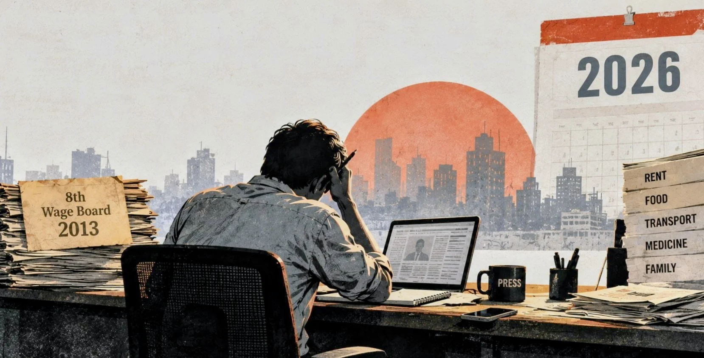

Dear fellow journalists; We report everyone else's fight for fair pay. What about our wage board?
For many journalists, the last wage structure that reached their newsroom dates to 2013. With the Ninth still largely unimplemented, the harder question is whether any new award would actually be enforced.


Four days after journalist Pulak Chatterjee was found dead at Samakal's Barishal bureau office, his family received Tk 10,30,155 in outstanding dues from the newspaper. In one of the notes he left behind, Pulak had asked a colleague to collect the money and hand it to his family.
His death cannot be reduced to one cause. Police said the notes referred to prolonged illness, unsuccessful treatment and distress over unemployment. But the dues are a separate matter. More than Tk 10 lakh he had already earned remained unpaid while he was alive.
I keep coming back to that fact because this is exactly the kind of question we ask when we report on other workers.
Why were wages unpaid? Why were dues withheld? Did the employer follow the law? What happens to a worker after dismissal?
We ask these questions of factories, schools, hospitals, government offices and private companies. We should be able to ask them just as plainly about our own newsrooms.
And when it comes to journalists' wages, the problem is deeper than the delay in forming a Tenth Wage Board.
The Eighth Newspaper Wage Board took effect in September 2013. The Ninth was gazetted in September 2019. Yet the government told parliament this April that the Ninth had not been implemented because of disputes between journalists and newspaper owners over income tax and six related court cases.
For most journalists, 2019 therefore did not mean a new salary. Chief reporters said in July, this year that journalists' salaries had not increased since 2013 and that the Ninth Wage Board remained unimplemented. BFUJ said most media houses do not pay journalists according to the wage board.
Think about what that means in 2026.
In the relatively few newsrooms where wage-board pay exists, journalists may still effectively be working under a structure designed 13 years ago. Many others are outside the wage-board system altogether. Rent, food, transport and medical bills have moved on. Our salary structure, in many cases, has not.
Perhaps this is also one reason the wage-board issue does not produce the collective pressure one might expect.
If you have never received a wage-board salary, what exactly does the Ninth or Tenth Wage Board mean to you? If your immediate struggle is getting your salary on time, receiving an appointment letter or collecting dues after leaving a job, another award in a government gazette can feel distant.
Journalist organisations have raised the issue. BFUJ and DUJ have repeatedly demanded implementation of the Ninth, formation of the Tenth and an interim dearness allowance. Journalists have also called for a "No Wage Board, No Media" policy.
So this is not a question of silence. It is a question of whether the demand has become sustained and broad enough, and whether another wage-board announcement would actually change what happens inside newsrooms.
What good is a Tenth Wage Board if an employer can simply ignore it?
There are already ideas for addressing that gap. In April 2025, the information ministry said a task force would work on implementing wage-board awards and indicated that government advertisements and facilities would go to newspapers following government policies. The Labour Reform Commission recommended that media owners submit monthly salary records to the Department of Inspection for Factories and Establishments. It also proposed mandatory appointment letters, defined working hours, insurance and pension provisions for journalists.
Those recommendations point to the real weakness in the current system: verification.
A newspaper can say it follows the wage board. The more important question is what its journalists actually receive at the end of the month. Payroll records can answer that. So can appointment letters, provident-fund records, gratuity payments and evidence that dues are cleared when someone leaves.
This is not only about young reporters trying to survive on entry-level salaries.
Before his death in August 2025, veteran journalist Bibhuranjan Sarker wrote about almost five decades in journalism, medical expenses and debt. Despite writing thousands of articles, he said he had received little payment for much of his work and often no honorarium.
Pulak and Bibhuranjan lived different lives. Their deaths should not be forced into one explanation. But the questions around their working lives are familiar.
What does a journalist have after 20, 30 or 40 years in the profession? Is there provident fund, gratuity, insurance or retirement protection? Are outstanding dues paid without the family having to chase them? What happens when illness makes regular work impossible?
We have normalised too much.
Low pay becomes "sacrifice". Working without clear terms becomes "commitment". Staying despite insecurity becomes "dedication".
None of those words pays rent, settles a hospital bill or provides security in old age.
A Tenth Wage Board is now being discussed, and journalist organisations are demanding it. But the Ninth should have taught us something: a board, an award and a gazette are not the same as money reaching a journalist's bank account.
For me, the conversation therefore cannot stop at "form the Tenth Wage Board". The next questions are just as important: How would a new award be enforced? How would compliance be checked? What happens when an employer does not comply? And what protection exists for journalists who remain outside the traditional newspaper wage-board structure?
Most of all, I think we need to make this our own conversation.
We report everyone else's wage disputes. We interview workers standing outside factory gates. We calculate arrears, question employers and ask authorities why labour protections were not enforced.
Dear colleagues, when the workplace is our own newsroom, why should we ask any less?